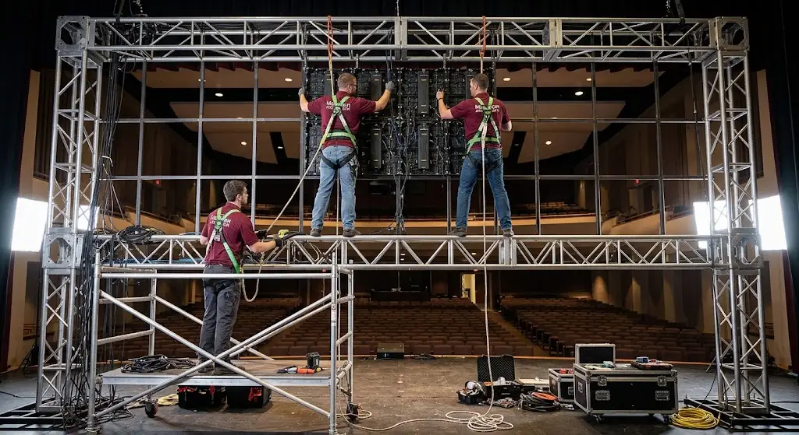

Harga videotron LED indoor untuk auditorium kampus dipengaruhi oleh harga modul LED per meter persegi, unit controller dan power supply, biaya instalasi, serta kebutuhan struktur rangka pemasangan di lokasi. Secara umum, kisaran total biaya pengadaan berkisar antara Rp 14.000.000 hingga Rp 35.000.000 per meter persegi, bergantung pada kerapatan pixel pitch (P1.8, P2.0, atau P2.5) dan kompleksitas rangka panggung yang digunakan.
Bagi panitia pembangunan kampus, rektorat, dan pejabat pembuat komitmen (PPK) institusi pendidikan, merencanakan anggaran modernisasi auditorium serbaguna sering kali memicu kebingungan. Sering kali estimasi anggaran hanya berpatokan pada harga brosur per panel modul tanpa memperhitungkan perangkat kontrol, perkuatan struktur gedung, dan sistem kelistrikan berdaya besar.
Akibatnya, proyek pengadaan teknologi visual multimedia kerap mengalami pembengkakan biaya (cost overrun) di tengah jalan. Artikel ini menyajikan panduan simulasi perhitungan harga videotron LED indoor secara menyeluruh agar panitia kampus dapat menyusun Rencana Anggaran Biaya (RAB) yang presisi, realistis, dan akuntabel.
Apa Saja Komponen yang Memengaruhi Harga Videotron LED Indoor?
Komponen utama yang memengaruhi harga videotron LED indoor meliputi harga modul LED per meter persegi, unit controller dan power supply, biaya instalasi, serta kebutuhan struktur rangka pemasangan di lokasi auditorium. Masing-masing elemen memiliki porsi biaya yang berbeda terhadap total investasi:
- Modul Panel LED & Kabinet Die-Cast: Menyumbang sekitar 60%–70% dari total nilai proyek. Harga ditentukan oleh teknologi chip LED (SMD atau COB), tingkat refresh rate (minimal 3840Hz), dan kerapatan jarak antar titik lampu (pixel pitch).
- Video Processor & Sending Controller: Perangkat keras pemroses sinyal video yang mengatur pemetaan piksel, switching input multimedia (HDMI/DisplayPort/SDI), dan integrasi sistem siaran audio-visual kampus.
- Power Supply & Distribusi Arus: Unit penyuplai daya DC yang stabil dan efisien dengan proteksi lonjakan arus pendek (over-voltage protection).
- Struktur Rangka Bracket Baja: Rangka penopang berbahan besi hollow galvanis atau baja profil yang dihitung kekuatannya terhadap beban mati dinding auditorium.
- Tenaga Ahli Instalasi & Commissioning: Jasa perakitan mekanikal presisi tanpa celah (seamless alignment) serta pengujian ketahanan nyala 24 jam nonstop sebelum serah terima resmi (BAST).
Semakin besar luas layar yang dibutuhkan dan semakin kompleks kebutuhan instalasi, seperti ketinggian rangka panggung atau akses ruangan yang terbatas, umumnya semakin tinggi pula total biaya yang harus dialokasikan oleh panitia pembangunan.
Bagaimana Simulasi Perhitungan Harga Videotron Berdasarkan Luas Layar?
Simulasi perhitungan harga videotron dilakukan dengan menghitung total luas layar dalam meter persegi, kemudian mengalikannya dengan harga modul per meter persegi sebelum menambahkan komponen biaya controller dan konstruksi rangka.
1. Menghitung Total Meter Persegi Layar Sesuai Dimensi Panggung
Luas layar dihitung dengan mengalikan tinggi dan lebar area videotron yang direncanakan, disesuaikan dengan dimensi panggung atau dinding auditorium tempat videotron akan dipasang. Sangat disarankan mempertahankan rasio aspek standar 16:9 agar materi presentasi seminar, video profil universitas, dan siaran live streaming wisuda tidak mengalami distorsi peregangan gambar.
Contoh: Untuk auditorium berkapasitas 400 orang dengan lebar panggung 12 meter, ukuran videotron yang ideal adalah lebar 6 meter x tinggi 3,5 meter, menghasilkan total luas permukaan sebesar 21 meter persegi (m²).
2. Menentukan Pixel Pitch Ideal Berdasarkan Jarak Pandang
Pixel pitch (disimbolkan huruf 'P') menunjukkan jarak antar titik LED dalam milimeter. Rumus praktisnya adalah: Jarak pandang penonton terdekat dalam meter sama dengan angka pixel pitch. Pada auditorium kampus:
- P1.86 / P2.0: Ideal jika baris kursi audiens terdepan berjarak 2–3 meter dari panggung. Tampilan teks presentasi slide berukuran kecil tetap terbaca sangat tajam.
- P2.5: Pilihan paling populer untuk auditorium skala menengah karena memberikan keseimbangan optimal antara ketajaman visual tinggi dan efisiensi anggaran.
- P3.07: Cocok untuk hall wisuda raksasa di mana jarak penonton terdekat berada di atas 4–5 meter dari dinding panggung.
3. Menambahkan Biaya Controller dan Power Supply
Setelah luas layar diketahui, tambahkan estimasi biaya unit controller yang berfungsi mengatur tampilan konten, serta power supply yang menyesuaikan kapasitas daya sesuai jumlah modul LED yang digunakan. Untuk layar berukuran 21 m² beresolusi Full HD atau 4K, dibutuhkan video processor berkapasitas input multi-channel dengan seamless switcher agar transisi antar pembicara berlangsung profesional.

Tabel Simulasi Estimasi Biaya Videotron Indoor Auditorium Kampus
Berikut adalah contoh simulasi estimasi pembiayaan pengadaan videotron LED indoor berdasarkan ukuran panggung yang sering digunakan pada institusi pendidikan tinggi:
| Kapasitas Auditorium | Dimensi Layar (P x L) | Luas (m²) | Pilihan Pitch | Estimasi Modul & Controller | Estimasi Rangka & Instalasi | Total Estimasi Investasi |
|---|---|---|---|---|---|---|
| Mini Teater (100–150 org) | 4,0 m x 2,25 m | 9,0 m² | P2.0 Indoor | Rp 155.000.000 – Rp 185.000.000 | Rp 25.000.000 | Rp 180.000.000 – Rp 210.000.000 |
| Auditorium Standar (300–500 org) | 6,0 m x 3,5 m | 21,0 m² | P2.5 Indoor | Rp 285.000.000 – Rp 335.000.000 | Rp 45.000.000 | Rp 330.000.000 – Rp 380.000.000 |
| Grand Hall Wisuda (1.000+ org) | 10,0 m x 5,0 m | 50,0 m² | P2.5 / P3.0 | Rp 590.000.000 – Rp 720.000.000 | Rp 95.000.000 | Rp 685.000.000 – Rp 815.000.000 |
*Catatan: Angka di atas merupakan simulasi perkiraan harga pasar terpasang (turnkey project) bergaransi resmi dan sudah termasuk PPN 11%. Harga riil dapat bervariasi bergantung pada merek komponen dan kondisi struktur fisik bangunan eksisting.
Apa Perbedaan Biaya Videotron Indoor untuk Auditorium Kecil dan Besar?
Auditorium besar membutuhkan luas layar lebih besar sehingga jumlah modul LED yang dibutuhkan juga lebih banyak, namun harga per meter persegi dapat bervariasi tergantung skala pemesanan dan jenis modul yang dipilih.
Selain faktor kuantitas modul, auditorium skala besar menghadapi tantangan teknis tambahan: kebutuhan daya listrik yang bisa mencapai 15.000 hingga 30.000 Watt, penggunaan kabel transmisi serat optik (fiber optic) untuk mencegah penurunan sinyal jarak jauh dari ruang kontrol operator FOH (Front of House) ke panggung, serta struktur rigging penopang beban dinding yang membutuhkan kalkulasi teknik sipil bersertifikat.
Apa Saja Biaya Tambahan di Luar Harga Modul Videotron?
Biaya tambahan di luar harga modul videotron dapat mencakup struktur rangka pemasangan, kabel data dan power, biaya tenaga instalasi, serta garansi dan layanan purnajual dari vendor yang dipilih. Poin-poin biaya pendukung yang wajib diperiksa dalam rincian penawaran antara lain:
- Sub-distribusi Panel Kelistrikan: MCB khusus, surge arrester penangkal petir, dan kabel NYY berstandar SNI untuk mencegah kebakaran akibat korsleting.
- Buffer Spare Part 3%–5%: Penyediaan modul LED cadangan dari batch produksi yang sama demi mencegah risiko belang warna di masa depan (pelajari lebih lanjut di paket perawatan videotron Jakarta).
- Pelatihan Mandiri Staf IT Kampus: Sesi training pengoperasian software NovaStar/Colorlight dan alat servis vakum magnetik.
- Uji Kelayakan Beban (Load Test) & Berita Acara: Dokumen legal pengujian fungsi 24 jam nonstop untuk kelengkapan audit BPK/inspektorat.
Bagaimana Cara Mendapatkan Simulasi Harga yang Akurat untuk Auditorium Kampus?
Cara paling akurat mendapatkan simulasi harga adalah mengajukan permintaan penawaran resmi kepada vendor resmi dengan menyertakan dimensi auditorium, jarak pandang penonton terjauh, dan kebutuhan resolusi tampilan yang diinginkan.
MAROON ATK berpengalaman menyuplai kebutuhan teknologi visual interaktif termasuk videotron panggung dan smart meeting display ke lebih dari 150 instansi pemerintah dan universitas di Jabodetabek dengan keakuratan pengiriman barang mencapai 99,8 persen (data internal Maroon ATK, 2026), sehingga panitia pembangunan kampus dapat memperoleh simulasi biaya yang transparan, bebas biaya tersembunyi, dan sesuai spesifikasi tender pengadaan.
Selain layar videotron panggung, tata ruang auditorium modern juga kerap memerlukan penataan fasilitas podium pimpinan, furniture kantor ruang VIP rektorat, dan perangkat kolaborasi ruang rapat dosen seperti interactive flat panel. Anda dapat membandingkan teknologi visual LED ini melalui panduan teknis perbedaan videotron LED indoor vs outdoor.
Kesimpulan dan Langkah Pengajuan Anggaran Videotron Kampus
Menyusun RAB videotron auditorium kampus yang akurat membutuhkan pemahaman komprehensif atas seluruh mata anggaran:
- Hitung luas panggung: Tetapkan rasio 16:9 yang proporsional dengan tinggi plafon gedung.
- Pilih pixel pitch rasional: Jangan memaksakan pixel pitch ultra-kecil jika jarak pandang audiens terdekat di atas 4 meter.
- Pastikan kelengkapan hardware: Masukkan video controller, audio de-embedder, dan sub-panel listrik ke dalam anggaran utama.
- Wajibkan garansi resmi: Pastikan vendor memberikan garansi suku cadang dan rangka minimal 2 tahun serta siap menerbitkan faktur pajak e-Faktur PPN.
- Jadwalkan survei lokasi: Manfaatkan layanan survei teknis gratis dari tim MAROON ATK untuk memastikan kelayakan instalasi gedung sebelum tender dibuka.
Minta Simulasi Harga & Penawaran Resmi Videotron
Konsultasikan layout auditorium kampus Anda dan dapatkan Surat Penawaran Harga (SPH) resmi lengkap dengan gambar teknis rangka dari tim engineering MAROON ATK.
Pertanyaan yang Sering Diajukan
Komponen utama meliputi harga modul LED per meter persegi, unit controller dan power supply, biaya instalasi, serta kebutuhan struktur rangka pemasangan di lokasi.
Hitung total luas layar dalam meter persegi, kalikan dengan harga modul per meter persegi, lalu tambahkan biaya controller, power supply, dan instalasi sebagai komponen terpisah.
Auditorium besar membutuhkan luas layar lebih besar sehingga jumlah modul LED yang dibutuhkan juga lebih banyak, namun harga per meter persegi dapat bervariasi tergantung skala pemesanan.
Biaya tambahan dapat mencakup struktur rangka pemasangan, kabel data dan power, biaya tenaga instalasi, serta garansi dan layanan purnajual dari vendor.
Cara paling akurat adalah mengajukan permintaan penawaran resmi kepada vendor dengan menyertakan dimensi auditorium, jarak pandang penonton, dan kebutuhan resolusi tampilan.

Ridhan Fahri
Praktisi pengadaan B2B dan konsultan teknologi multimedia visual yang berfokus pada efisiensi anggaran fasilitas, integrasi sistem display videotron, dan keandalan sarana institusi pendidikan di Indonesia.